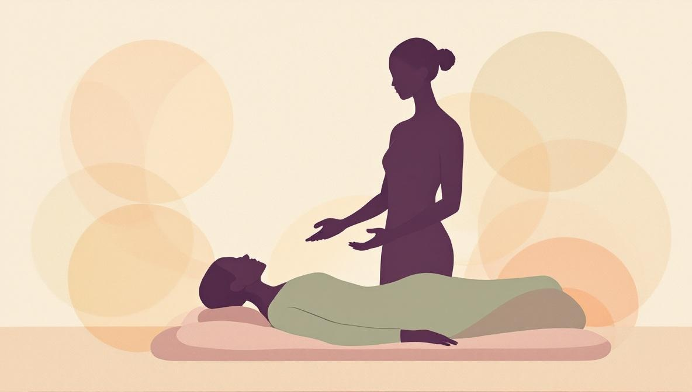

Cos'è il Pranic Healing?
Il Pranic Healing è un metodo di guarigione energetica senza contatto fisico basato sull'idea che il corpo umano sia circondato da un campo energetico "bioplasmatico" — quello che i praticanti chiamano corpo energetico o aura. La parola prana deriva dal sanscrito e significa energia vitale: lo stesso concetto compare come qi nella tradizione cinese e come ki in quella giapponese. L'operatore non tocca il cliente ma lavora a pochi centimetri dal corpo, utilizzando due tecniche complementari: pulizia del campo energetico dall'energia stagnante (sweeping) e ri-energizzazione con prana fresco proveniente dall'ambiente.
All'interno della categoria più ampia delle terapie del biocampo — insieme a Reiki, Therapeutic Touch, Healing Touch e qi gong — il Pranic Healing si distingue per un approccio molto strutturato, quasi tecnico: ogni condizione ha un protocollo specifico di procedure di pulizia ed energizzazione. Questo lo rende più "standardizzato" rispetto al Reiki, che tradizionalmente si affida di più all'intuizione dell'operatore.
Le origini: Master Choa Kok Sui e il metodo moderno
Il Pranic Healing come lo conosciamo oggi è stato codificato da Master Choa Kok Sui (1952-2007), ingegnere chimico filippino-cinese e insegnante spirituale. Dopo oltre vent'anni di studio personale di yoga, qi gong e tradizioni esoteriche, nel 1987 ha pubblicato The Ancient Science and Art of Pranic Healing, il testo fondativo del metodo. Il suo obiettivo era esplicito: prendere quella che, a suo avviso, era una conoscenza empirica trasmessa oralmente per secoli e trasformarla in un sistema insegnabile e replicabile con procedure coerenti.
Master Choa Kok Sui ha poi fondato l'Institute for Inner Studies a Manila e la World Pranic Healing Foundation, che oggi coordina una rete di istruttori certificati in oltre 100 paesi. Il metodo si è diffuso in Europa negli anni '90 ed è arrivato in Italia nei primi anni 2000, dove conta oggi una comunità consolidata di operatori e un programma formativo riconosciuto.
I principi fondamentali del Pranic Healing
Il metodo si basa su quattro premesse fondamentali:
- Il prana è ovunque. Aria, sole e terra sono descritte come le tre principali fonti di energia vitale a cui l'operatore attinge durante una seduta.
- Il corpo energetico precede quello fisico. Secondo il sistema, gli squilibri si manifestano prima nel campo energetico e diventano nel tempo sintomi fisici o psicologici. Lavorare sul campo è quindi preventivo.
- Pulizia ed energizzazione sono due movimenti distinti. L'operatore rimuove prima l'energia stagnante o 'sporca' con movimenti di sweeping, poi introduce prana fresco nella zona. Saltare la fase di pulizia è considerato un errore tecnico.
- Il corpo ha una propria capacità di auto-guarigione. L'operatore non 'guarisce' nessuno: l'obiettivo è sostenere e accelerare i processi naturali che il corpo già svolge da solo.
Come funziona una sessione di Pranic Healing
Una sessione standard dura tra i 30 e i 60 minuti. Ecco come si svolge tipicamente:
- Colloquio iniziale (5-10 min). L'operatore chiede il motivo della visita, i sintomi attuali, le cure mediche in corso, le aspettative. Un operatore serio non richiede diagnosi mediche e non si propone mai come alternativa al medico.
- Scansione del campo energetico. Con il cliente in piedi o seduto, l'operatore muove le mani a pochi centimetri dal corpo, lentamente. L'obiettivo è individuare zone percepite come 'depletate' o 'congeste'. Questa fase è puramente energetica — non c'è alcun esame fisico.
- Pulizia (sweeping). L'operatore esegue movimenti di sweeping, come se 'pettinasse' il campo energetico, per rimuovere energia stagnante. Le mani restano sempre a distanza dal corpo.
- Energizzazione. Attingendo prana dall'ambiente, l'operatore lo dirige verso le zone individuate in scansione. La tecnica varia in base al protocollo applicato.
- Chiusura e stabilizzazione. L'operatore 'sigilla' il campo energetico, lascia al cliente qualche minuto per riprendersi e fornisce brevi raccomandazioni (es. bere acqua, riposare). Non vengono date diagnosi o consigli medici.
Le sensazioni soggettive comuni durante una sessione includono calore, leggero formicolio, rilassamento profondo, a volte sonnolenza. Alcune persone sentono poco o nulla durante la seduta stessa ma riportano effetti sul sonno o sull'umore nelle ore successive. Entrambe le risposte sono normali.

I 7 chakra principali nel modello del Pranic Healing
Il sistema del Pranic Healing descrive 11 chakra principali (qualcuno in più rispetto ai sette della tradizione yoga classica). Per restare sull'essenziale, ecco i sette punti comuni alla maggior parte delle tradizioni energetiche, con le corrispondenze attribuite in questo modello:
- Chakra di base (base della colonna): energia vitale, corpo fisico, sopravvivenza di base.
- Chakra del sesso: funzione riproduttiva, vitalità sessuale.
- Plesso solare: digestione, forza di volontà, assimilazione dell'energia. Nel Pranic Healing è considerato uno dei punti centrali da lavorare per disturbi emotivi.
- Chakra del cuore: vita emotiva, capacità di dare e ricevere.
- Chakra della gola: comunicazione, espressione, ascolto.
- Chakra dell'Ajna o frontale (tra le sopracciglia): coordinamento mentale, capacità di decisione.
- Chakra della corona: connessione com a dimensão espiritual, integrazione.
Una nota importante: i "centri energetici" qui descritti sono un modello interpretativo della disciplina, non strutture anatomiche. Non sono visibili a esami diagnostici e non corrispondono a nessuna struttura riconosciuta dalla medicina occidentale. Sono utili come mappa di lavoro nel quadro del metodo — non come descrizione clinica del corpo.
Pranic Healing e Reiki: le differenze
I due metodi appartengono alla stessa famiglia — le terapie del biocampo — ma hanno differenze importanti. Le più rilevanti:
- Origine e lignaggio. Il Reiki è stato sviluppato da Mikao Usui in Giappone all'inizio del XX secolo. Il Pranic Healing è stato codificato da Master Choa Kok Sui nelle Filippine nel 1987. Sono due lignaggi distinti.
- Contatto. Il Reiki utilizza tradizionalmente un contatto leggero sul corpo o vicino al corpo. Il Pranic Healing lavora sempre senza contatto, a pochi centimetri dalla pelle.
- Metodo. Il Pranic Healing è molto protocollare: per ogni condizione esiste una procedura con fasi di pulizia ed energizzazione da seguire in sequenza. Il Reiki è più contemplativo, lascia più spazio all'intuizione del praticante e utilizza simboli rituali.
- Iniziazione vs formazione. Il Reiki richiede attunement — una cerimonia di trasmissione energetica dal maestro all'allievo. Il Pranic Healing si basa invece sulla formazione tecnica e sulla pratica: non c'è iniziazione, le abilità sono descritte come sviluppabili tramite esercizio.
Scegliere l'uno o l'altro è in gran parte una questione di stile personale. Chi preferisce un approccio strutturato e tecnico tende spesso al Pranic Healing. Chi è attratto da una pratica più contemplativa e di tradizione giapponese sceglie spesso il Reiki. Nessuno dei due è "migliore" dell'altro in assoluto.
Cosa può fare e cosa non può fare il Pranic Healing
L'onestà qui conta più dell'entusiasmo. Gli operatori e le risorse più affidabili sul metodo descrivono il Pranic Healing come un supporto complementare al benessere, utile per:
- Ridurre l'intensità percepita dello stress psico-fisico.
- Favorire il rilassamento profondo e migliorare la qualità del sonno.
- Supportare la gestione di stati ansiosi lievi o moderati, accanto ad altri interventi.
- Accompagnare periodi di recupero dopo stress fisici o emotivi come strumento di "reset".
Cosa il Pranic Healing non fa, e che nessun operatore serio dovrebbe sostenere:
- Non diagnostica malattie. La scansione energetica non è un esame clinico.
- Non cura tumori, malattie autoimmuni o qualsiasi altra patologia grave.
- Non sostituisce le terapie farmacologiche. Chi suggerisce di interrompere una cura prescritta opera fuori dai confini legali ed etici della professione.
- Non funziona "sempre e per tutti". Come per tutte le terapie del biocampo, la risposta individuale è variabile. Alcune persone riportano benefici evidenti, altre poco o nulla.
Dal punto di vista normativo, in Italia un operatore di Pranic Healing rientra nel quadro delle professioni non regolamentate introdotto dalla Legge 4/2013 ed è regolato dalla norma UNI 11713 per la figura dell'Operatore Olistico. Non è una professione sanitaria, e qualsiasi condotta che ne imiti una (diagnosi, prescrizioni, dichiarazioni di guarigione) può integrare il reato di esercizio abusivo della professione medica.
Cosa dice la ricerca scientifica?
Le terapie del biocampo — la categoria più ampia che include Pranic Healing, Reiki, Therapeutic Touch e Healing Touch — sono state studiate in diversi trial clinici e revisioni, ma le evidenze restano limitate e disomogenee. Il National Center for Complementary and Integrative Health (NCCIH, parte degli NIH statunitensi) classifica queste pratiche come "terapie del biocampo" e segnala che, sebbene alcuni studi suggeriscano possibili effetti su rilassamento, ansia e percezione del dolore, la qualità metodologica è variabile e i trial randomizzati controllati con campioni adeguati sono scarsi.
Una difficoltà comune in questo tipo di ricerca è separare gli effetti specifici della tecnica dagli effetti aspecifici: l'attenzione dell'operatore, il setting tranquillo, l'aspettativa di miglioramento, l'effetto placebo. Questi fattori sono reali e utili, ma non sono esclusivi del Pranic Healing — sarebbero presenti in qualsiasi setting di cura relazionale tranquillo e ben condotto.
In sintesi: c'è una quantità ragionevole di evidenze preliminari sul fatto che le terapie del biocampo, incluso il Pranic Healing, possano sostenere il rilassamento e la riduzione dello stress. Non ci sono evidenze robuste sul fatto che curino patologie specifiche. Affrontare la disciplina con questa onestà permette di trarne beneficio per quello che davvero può offrire.
La formazione: i livelli del Pranic Healing
Il programma formativo codificato da Master Choa Kok Sui è strutturato in livelli progressivi. Ogni livello si fonda sul precedente e introduce tecniche specifiche:
- Basic Pranic Healing. Due giornate intensive. Insegna scansione, sweeping, energizzazione di base e i protocolli per le condizioni più comuni (mal di testa, tensione muscolare, difficoltà di sonno).
- Advanced Pranic Healing. Altre due giornate, focalizzate sui prana colorati — l'uso di 'colori' diversi di energia per condizioni diverse. Considerato indispensabile per lavorare seriamente con il metodo.
- Pranic Psychotherapy. Applicazione specifica del metodo a stati di stress emotivo, traumi, pattern di pensiero ripetitivi. Spesso il livello più richiesto da chi lavora in ambito di supporto.
- Crystal Pranic Healing. Utilizzo dei cristalli come strumenti ausiliari nel lavoro di pulizia ed energizzazione. Livello opzionale.
- Livelli superiori (Arhatic Yoga, corsi avanzati). Vanno oltre la pratica clinica e si rivolgono a dimensioni più spirituali e meditative del metodo.
In Italia la formazione è erogata da istruttori certificati della World Pranic Healing Foundation. Per lavorare professionalmente come operatore di Pranic Healing, avere il livello Basic è il minimo assoluto; per una pratica seria, la combinazione Basic + Advanced + Pranic Psychotherapy è comunemente considerata lo standard.
Come scegliere un operatore qualificato
Domande pratiche da fare prima di prenotare una sessione:
- Quali livelli di Pranic Healing hai completato e con quale istruttore? Un operatore serio risponde senza esitazione e mostra i certificati se richiesto.
- Sei iscritto a un'associazione di categoria ai sensi della Legge 4/2013? L'iscrizione a un'associazione riconosciuta in Italia aggiunge un livello di controllo professionale ed etico.
- Cosa posso realisticamente aspettarmi, e quante sedute mi suggerisci? Una risposta onesta parla di benessere e riduzione dello stress, non di guarigioni o patologie specifiche.
- Hai un'assicurazione di responsabilità professionale? Domanda semplice ma rivelatrice. Un operatore strutturato risponde di sì.
Segnali di allarme: chi promette di curare patologie specifiche, chi suggerisce di interrompere terapie prescritte, chi spinge su pacchetti costosi di molte sedute prima di una prima sessione, chi evita risposte chiare sulla propria formazione. Il Pranic Healing è una pratica complementare che può integrarsi bene in un percorso di benessere, ma sempre accanto — non contro — le cure mediche che la tua situazione richiede.
Cerchi un operatore di Pranic Healing verificato?
Holistic Unity è il marketplace che collega operatori olistici verificati con chi cerca attivamente una sessione di guarigione energetica. I profili sono controllati, la formazione è documentata e puoi prenotare una prima sessione online — senza impegnarti in anticipo.
Esplora la Guarigione EnergeticaFonti e riferimenti
- Testo fondativo del metodo: Master Choa Kok Sui, The Ancient Science and Art of Pranic Healing, Institute for Inner Studies Publishing Foundation, Manila, 1987 (con successive edizioni aggiornate).
- Istituzione internazionale di riferimento: World Pranic Healing Foundation e Institute for Inner Studies, fondati da Master Choa Kok Sui nelle Filippine, coordinatori di istruttori certificati in oltre 100 paesi.
- Quadro scientifico sulle terapie del biocampo: National Center for Complementary and Integrative Health (NCCIH), parte dei National Institutes of Health (NIH) statunitensi — nccih.nih.gov. Pubblica revisioni sulle terapie energetiche e del biocampo.
- Letteratura primaria indicizzata: PubMed, banca dati bibliografica degli NIH — pubmed.ncbi.nlm.nih.gov. Le ricerche su "biofield therapy", "pranic healing", "energy healing" restituiscono studi clinici e osservazionali sul tema.
- Legge italiana sulle professioni non regolamentate: Legge 14 gennaio 2013, n. 4 («Disposizioni in materia di professioni non organizzate») — testo ufficiale su Gazzetta Ufficiale.
- Norma UNI 11713: «Attività professionali non regolamentate — Operatore olistico» — pubblicata dall'Ente Italiano di Normazione (UNI), consultabile su store.uni.com. Definisce requisiti formativi, etici e operativi per la figura dell'operatore olistico in Italia, applicabile anche al Pranic Healing.
Domande frequenti
Il Pranic Healing è scientificamente provato?
Le terapie del biocampo (di cui il Pranic Healing fa parte, insieme al Reiki e al Therapeutic Touch) sono state studiate in vari trial clinici, ma le evidenze restano limitate e di qualità eterogenea. Studi e revisioni indicano possibili effetti su rilassamento, ansia e percezione del dolore, ma è difficile separare gli effetti specifici del metodo dall'effetto placebo e dal contesto della cura. Il Pranic Healing va considerato una pratica complementare di benessere, non un trattamento medico.
Pranic Healing e Reiki sono la stessa cosa?
No. Entrambi lavorano con il concetto di energia vitale e fanno parte della stessa famiglia (terapie del biocampo), ma il Pranic Healing è un sistema codificato da Master Choa Kok Sui negli anni '80 con protocolli precisi — scansione, pulizia ed energizzazione — e tipicamente senza contatto fisico. Il Reiki è una tradizione giapponese di Mikao Usui (inizio '900), spesso con leggero contatto, simboli e attunement, e una struttura più contemplativa.
Quante sedute servono per vedere risultati?
Dipende dall'obiettivo. Per uno stato di rilassamento generale o per gestire un periodo di stress acuto, 1-3 sedute possono essere sufficienti. Per condizioni croniche legate a tensione, ansia o disturbi del sonno, gli operatori formati raccomandano un ciclo di 4-8 sedute con cadenza settimanale. Un operatore serio non promette guarigioni e suggerisce sempre di abbinare il percorso a controlli medici quando indicato.
Posso fare Pranic Healing a distanza?
Sì. Il Pranic Healing a distanza è una delle tecniche insegnate nei livelli avanzati del metodo. L'operatore lavora sul corpo energetico del cliente in videochiamata o per appuntamento concordato, applicando gli stessi protocolli di scansione, pulizia ed energizzazione che userebbe in presenza. L'efficacia percepita è simile a quella delle sedute in presenza, secondo i resoconti dei praticanti, anche se le evidenze cliniche su questo aspetto sono ancora limitate.
Il Pranic Healing è una religione?
No. Il Pranic Healing è presentato dai suoi insegnanti come un sistema neutrale dal punto di vista religioso. Master Choa Kok Sui ha sviluppato il metodo come una sintesi di principi tratti da yoga, qi gong e altre tradizioni energetiche orientali, senza richiedere l'adesione a una specifica fede. Persone di qualsiasi religione (o nessuna) possono praticarlo o riceverlo.
Quanto costa una sessione di Pranic Healing in Italia?
Le tariffe variano in base alla città, all'esperienza dell'operatore e al formato (in presenza o online). In Italia una sessione singola costa tipicamente tra €40 e €90. Pacchetti di più sedute spesso prevedono uno sconto. Per le grandi città (Milano, Roma) le tariffe medie sono leggermente più alte. Diffida di operatori che chiedono cifre molto superiori senza una giustificazione chiara di esperienza o specializzazione.